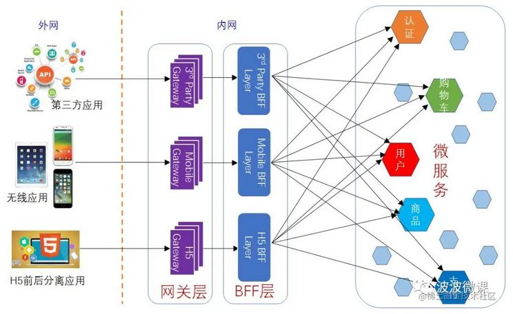

特性 #
- 路由
- 灰度发布
- 反向代理,负载均衡
- 鉴权
- 限流
- 监控
- 缓存
分类 #
- 入口网关
- 出口网关
框架 #
| 产品 | 技术 |
|---|---|
| apisix self | lua + Nginx |
| Kong | lua + Nginx |
| Zuul | Spring Cloud Netflix |
| Gateway self | Spring Cloud |
| Traefik | Golang |
实现 [3] #
- 扩展性
责任链模式 - Zuul filter, Envoy filter - 性能
多路 I/O 复用模型 和 线程池 - 可用性
线程池 服务隔离
API Gateway+BFF #
API Gateway + BFF [3] #
流量网关 + 业务网关
BFF 聚合网关 [2] #

参考 #
- 使用 API 网关构建微服务
- 微服务架构：BFF和网关是如何演化出来的？
- 《27 | API网关：系统的门面要如何做呢？》
- 百亿规模API网关服务Shepherd的设计与实现 点评 未
- Go to Page self